Up Mount Etna: From Nicosia across the interior to Etna. At around 3,300 m it is Europe's highest active volcano and a UNESCO World Heritage Site since 2013. An off-road bus takes us up the north side near Linguaglossa into the lava fields, between craters and cushions of milk-vetch, with snow still lying higher up.
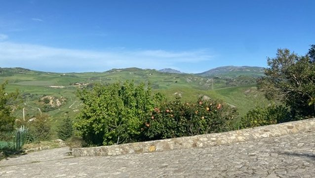
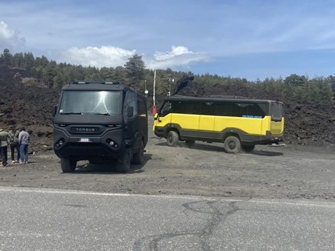
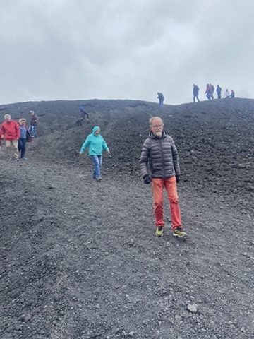
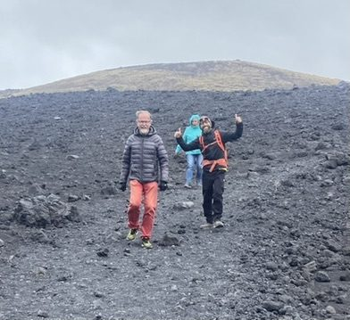
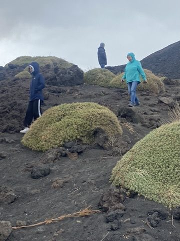
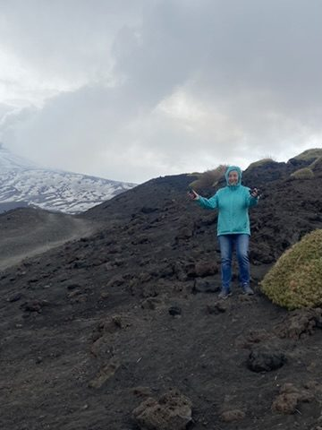
Etna wine: The lava soils make Etna one of Italy's most exciting wine regions: Nerello Mascalese for red, Carricante for white; Etna DOC has existed since 1968. In the evening at a wine bar in Linguaglossa, on Wednesday at a winery near Milo. In between, a giant bench with a view over the volcanic slope.
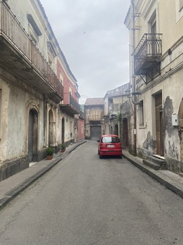
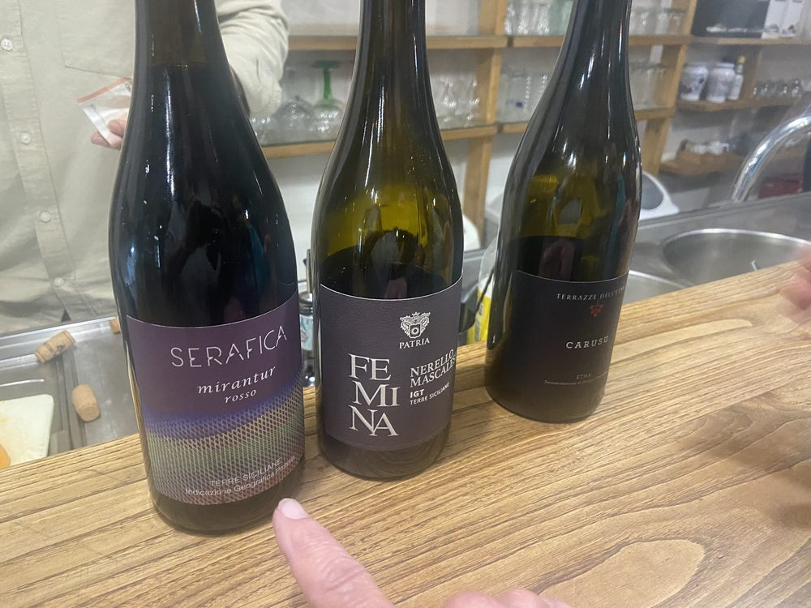
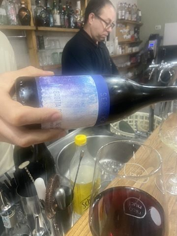
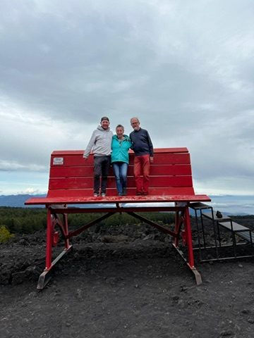
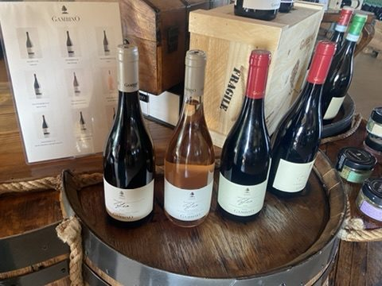
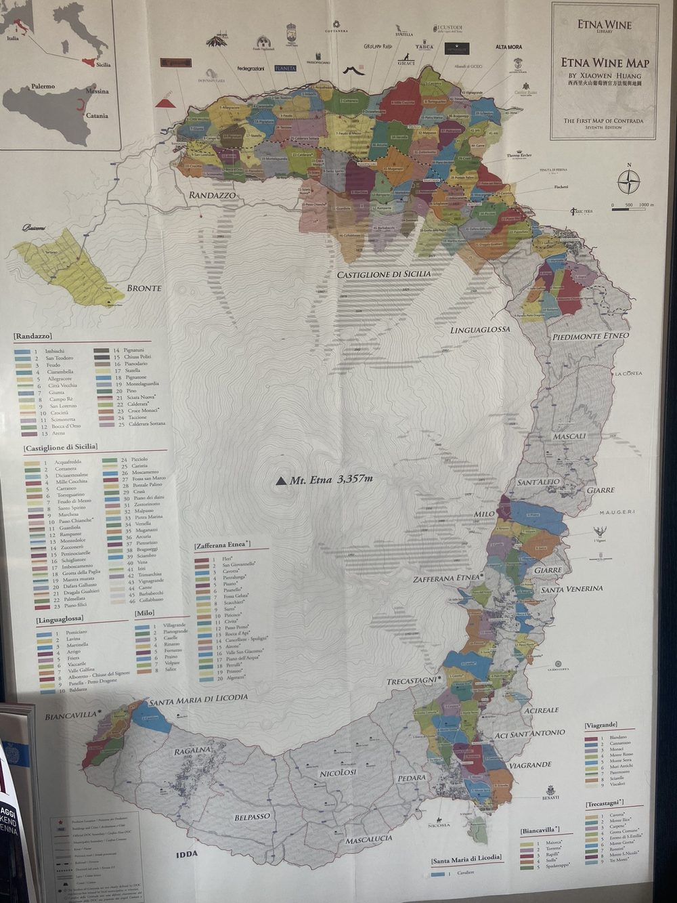
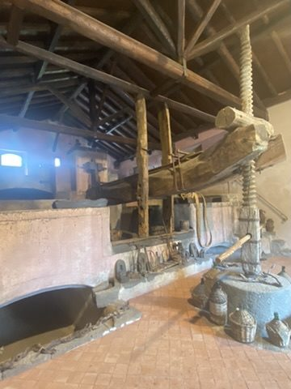
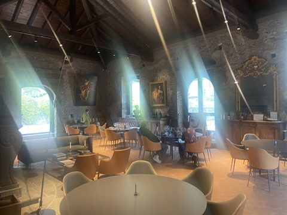